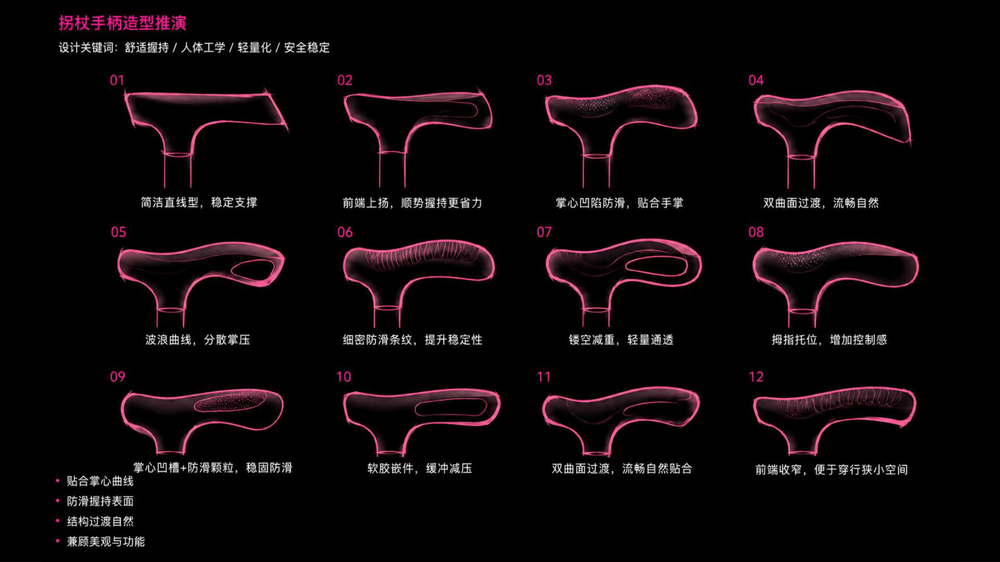
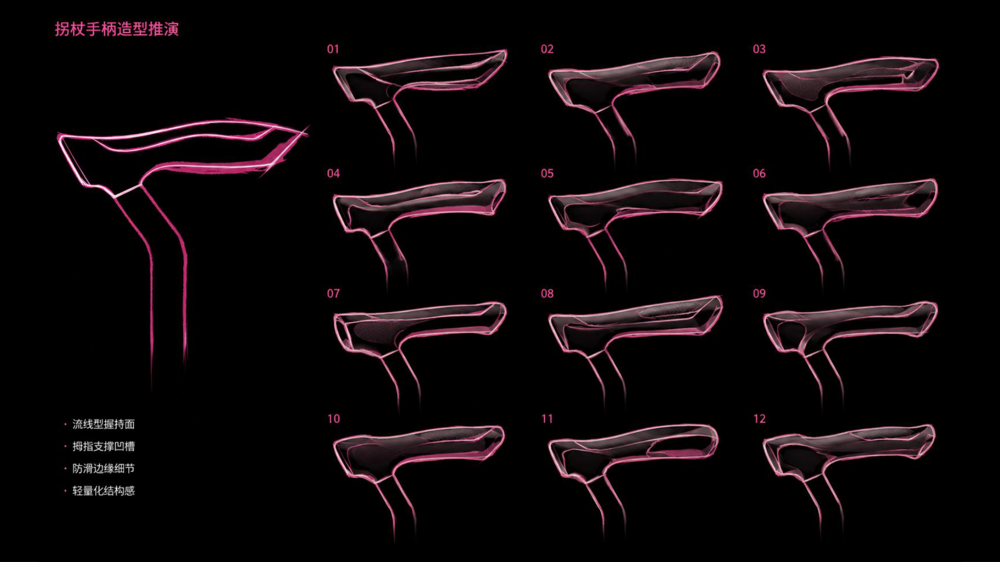
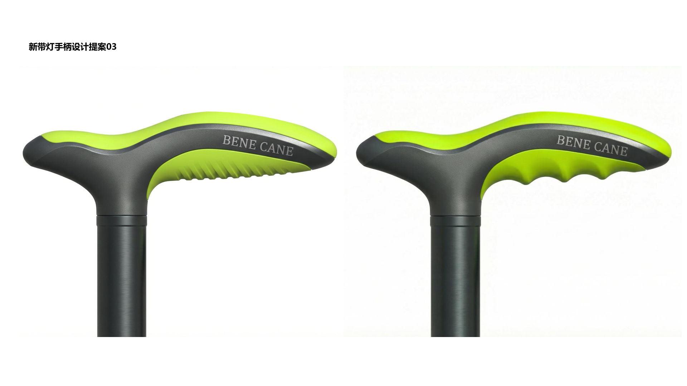

从美国市场拐杖手柄握感角度调研，到设计参考的可转化性筛选，再到入选方案 03/05 的人体工学落地分析—— 构建一条「调研基准 → 设计输入 → 方案验证」的完整接轨链路。
基于美国市场在售产品与人因工程研究的握感设计可视化。"角度"只是握感设计的一个维度——从腕部中立位、掌面几何、握围材质到受力轴线，构建完整的设计基准框架。
19°±5° 不是偏移柄相对地面的夹角，而是「手柄掌托受力面」相对「前臂解剖轴线」的解剖学预置角。对手杖而言，它被翻译成偏移柄前倾角 15-20° + 掌托面微背伸弧 0-10°。腕完全 0°（手掌纯向下）垂手握直柄时，掌根尺侧会代偿性尺偏来找受力面——预置 19° 背伸让掌根自然落位，是"前臂轴线延续"与"掌根脂肪垫承压"折中的实验结果。
| 角度名 | 测量对象 | 典型值 | 一句话记忆 |
|---|---|---|---|
| 腕解剖中立位 | 掌骨长轴 vs 前臂轴 | 0° | 手与前臂成直线，参考零点 |
| 手柄内建基准角 | 掌托受力面 vs 前臂轴 | 19°±5° | 掌托面预先上翘，管手腕 |
| 偏移柄前倾角 | 手柄中心线 vs 杖身轴 | 15-20° (≤30°) | 握把相对杖身前倾，管手杖造型 |
| 肘屈曲角（调高用） | 上臂 vs 前臂 | 15-30° | 肘部微屈，管杖高 |
更大握围 + 软TPE材质 —— 增大接触面积、降低峰值压强，软质压缩吸收震动。
中等握围 + 橡胶/木质 —— 平衡触感与耐用，橡胶牵引力佳，木质温感自然。
好的 ergonomic 手柄能把握持力分散到约 3 倍于标准 crook 柄的掌心表面积，显著降低峰值压力。
| 维度 | 典型规格 | 设计影响 |
|---|---|---|
| 承重等级 | 250-300 lb 标准款，重型款 500 lb | 结构强度决定柄芯与杖身材料选型 |
| 高度可调 | 29-39 英寸（74-99 cm） | 让"腕中立位"在不同身高用户上都成立 |
| HCPCS 编码 | E0100（crook 型） | 医保报销路径影响产品设计取向 |
| 腕带 | 多数偏移柄标配 | 防止跌落，安全设计组件 |
| 合规门槛 | FDA 一类辅助器具（无角度强制值） | 角度是人体工学优化结果而非合规门槛 |
19°±5° 腕中立位基准角 + 多曲率掌面雕塑 + 硬质PP/铝芯包软TPR + 左右手可选/可调 + 高度联动 + 智能传感预留位 + 消费级外观 —— 角度不再是孤立的"几度"问题，而是整个握感系统中的一个基准变量。
单纯加大偏移角并不能持续改善握感。美国职业治疗调查指出，72% 的长期手杖使用者报告的手/腕不适，根源是把手形状迫使手腕偏离中立位 —— 角度只是手段，中立位才是目的。如目标用户为术后康复或重度支撑需求，偏移柄 + 四脚底座组合是美国市场被物理治疗师最常处方的方案。
| 尺寸项 | 建议值 | 说明 |
|---|---|---|
| 握把成品直径 | 25-32mm | 健康手取 25-28；舒适型 28-32 |
| 关节炎/握力弱人群 | 32-35mm | 软TPE 加粗，降峰值压强 |
| 掌托握距 | 64-89mm | 超出区间握力与稳定性下降 |
| 握把长度 | 100-150mm | ≥100mm 容四指；掌托型取长值 |
| 杖身管径 | 22.2 / 25.4mm | 1in=25.4mm 为美标常见值 |
| 手宽覆盖 | P5女68 - P95男92mm | 据此定直径/握距上下限 |
① 承压设计给大鱼际 + 小鱼际，中央掌弓保持凹面不承压（避开正中神经）；② 纹理可防滑，但避免深槽/脊状纹路压伤神经与血管（康奈尔：textured 可以，contoured 不行）。
| 合规/测试项 | 要求 | 对设计的影响 |
|---|---|---|
| FDA 分类 | 21 CFR 890.3940 一类器械（510(k)豁免） | 无角度强制值 → 角度是设计自由度 |
| 承重静载测试 | 典型 250lb（113kg）垂直静载不失效 | 决定柄芯/杖身结构与材料选型 |
| 倾斜稳定性 | 约 10° 倾斜面站立稳定 | 影响四脚底座与重心设计 |
| 杖尖标准 | ISO 24415 系列（接触面 + 摩擦测试） | 杖尖材质、直径与表面处理 |
| 表面与清洁 | 防滑 + 可清洁（医疗环境） | 纹理设计、抗菌涂层可选 |
| 医保编码 | HCPCS E0100（标准杖）/ E0105（四脚杖） | 影响报销路径与产品线定义 |
角度、曲面、材质、颜色——无合规强制，可以放开做差异化；静载强度、稳定性、杖尖摩擦——硬性测试，做不好直接出局。立项时优先把这 3 项测试排进验证计划。
| 用户画像 | 偏移柄 | Fritz 正畸柄 | 掌握柄 | Derby 钩柄 |
|---|---|---|---|---|
| 老年人日常代步 | ★★★★★ 首选 | ★★★★ 推荐 | ★★★ 可选 | ★★ 一般 |
| 术后康复期 | ★★★★★ 首选 | ★★★★ 推荐 | ★★ 视情况 | ★ 不推荐 |
| 关节炎/握力弱 | ★★★★ 推荐 | ★★★★★ 首选 | ★★★★ 推荐 | ★★ 一般 |
| 腕管综合征 | ★★★ 可选 | ★★★★ 推荐 | ★★★★★ 首选 | ★ 不推荐 |
| 轻度支撑/外观优先 | ★★★ 可选 | ★★ 一般 | ★★ 一般 | ★★★★★ 首选 |
| 长期重度支撑 | ★★★★★ 首选 | ★★★★ 推荐 | ★★★★ 推荐 | ★ 不推荐 |
偏移柄作为美国市场主流推荐，覆盖了最广泛的用户画像；Fritz 正畸柄在关节炎与舒适度敏感人群中表现最优；掌握柄是特定病症（腕管综合征/类风湿）的专用方案；Derby 钩柄则适合轻度需求与外观优先的场景。设计选型时应优先匹配目标用户的核心健康特征与使用强度，而非外观偏好——这正是本案选择偏移柄路线作为基础、融合 Fritz 掌托曲面与掌握柄指槽引导的设计依据。
将人因工程调研发现筛选为可设计性评估，转译为具体的设计输入参数——并在手柄造型推演线稿阶段即纳入人体工学考量
对调研结论逐项进行可设计性评估，筛选出可直接指导 CAD 的设计输入
| 调研发现 | 人因工程依据 | 可设计性 | 转译为设计输入 |
|---|---|---|---|
| 19°±5° 腕中立位基准角 | Emmanuel 1980，掌托面相对前臂轴线预置角 | 可直接建模 | 掌托受力面预置 ≈19° 背伸角，作为 CAD 基准面；开关置于拇指自然落点验证中立位 |
| 15-20° 偏移柄前倾角 | 承重线穿过腕关节，减少 50% 腕部拉力 | 可直接建模 | 握把中心线相对杖身前倾 15-20°；灯带延伸至管身连接处，结构上预留 offset 空间 |
| Fritz 4-6in 掌托平台 | 扁平平台分散压力，疲劳降低 40-60% | 可直接建模 | 大面积软胶包覆掌托；波浪式握持曲面贴合掌弓，角度+曲面复合几何 |
| 软胶握持分区 | 握持力分散到 3 倍掌心表面积 | 可直接建模 | ABS 硬骨架 + TPE/硅胶软包覆，CMF 软硬双色分区作为第一造型逻辑 |
| 1in 杖身管径基准 | 美国市场标准管径 | 可优化调整 | 本案采用 22.5mm 管径，基于日式拐杖产品体系与轻量化需求优化 |
| 左右手分掌引导 | 掌握柄分左右手，引导手指定位 | 部分采纳 | 波浪曲面+指槽引导手指落位，弱化左右手强分以兼顾通用性与工学 |
| —（调研未覆盖） | 夜间/暗区使用安全需求 | 设计新增 | ≥120° 广角灯带延伸至管身连接处，前向照明整合在握持功能轴上 |
| —（调研未覆盖） | 适老化电池更换的认知与施力门槛 | 设计新增 | 旋拧式电池尾盖 + 滚花纹，使用流程工学新维度 |
调研产出的是人因工程基准值（角度、宽度、管径），设计需要的是可建模的几何参数与材料决策。本表将调研发现转译为设计输入，并标注 2 项调研未覆盖但设计需要补充的功能维度（照明、可维护性），形成完整的设计输入清单。
在色彩渲染之前，线稿推演阶段就已将掌心凹陷、拇指托位、波浪曲线、防滑纹理等工学要素纳入造型探索

线稿阶段即针对掌心凹陷防滑（03）、波浪曲线分散掌压（05）、拇指托位增加控制感（08）、软胶嵌件缓冲减压（10）等人体工学方向进行多方案探索。每个线稿方案直接对应一项工学设计要点，证明人体工学在造型推演的最早期就已作为筛选条件，而非渲染阶段才追加。

左侧主方案明确标注 4 项工学特征：流线型握持面、拇指支撑凹槽、防滑边缘细节、轻量化结构感。右侧 12 个侧视轮廓展示从方→圆→流线的形态演化，体现了对偏移柄前倾角与掌托曲面的早期推演——这正是调研结论中「15-20° 偏移柄前倾角 + Fritz 掌托曲面复合几何」的线稿阶段验证。

两种软胶包裹形态（条纹式 vs 指凹式）的并排对比，是线稿工学探索在渲染阶段的落地验证。条纹式对应调研中「掌屈弧线」，指凹式对应「指槽引导手指定位」——调研结论中的掌面接触几何在此被转译为具体的软胶分区方案。
三组线稿证明：设计方案并非在渲染阶段才「贴上」人体工学标签，而是从造型推演线稿阶段就将掌心凹陷、拇指托位、波浪曲线、防滑纹理、流线型握持面、侧视轮廓演化等工学要素作为方案筛选的必要条件。这使调研结论的转译在设计早期就已完成，而非后期补救。
经评审选定的两套推进方案——将设计亮点与调研基准逐项对接，验证人体工学落地度
运动感与产品识别 —— 大面积软胶掌托 + 透气防滑孔 + 前端轮廓包边灯带
人体工学握持 × 前置照明 × 运动感年轻化 CMF
两套入选方案在调研四大维度上的实现度对比
| 调研维度 | 方案 03 落地 | 方案 05 落地 |
|---|---|---|
| Fritz 掌托平台 | 黑色硅胶大面积掌托（宽平台 + 透气防滑孔） | 波浪式握持曲面（掌屈弧线连续化） |
| 软胶握持分区 | 橙 ABS 硬 × 黑硅胶软，CMF 双色分区 | 哑光黑主体 + 软胶包覆 + 防滑纹理 |
| 腕中立位 19°±5° | 适老化握持 + 拇指落点开关 | 标题「人体工学握持」+ 受力路径贴合 |
| 偏移柄前倾角 15-20° | 灯带延伸预留 offset 空间 | 前置照明 + 偏移柄造型 |
| 照明系统（新增） | 前端轮廓包边柔性灯带 | 前置冷白导光头 |
| 可维护性（新增） | 旋拧式电池尾盖 + 滚花 | 后端旋钮防滑纹理 |
| CMF 定位 | 橙运动感 × 产品识别 | 荧光绿年轻化 × 破医疗器械感 |
方案 03 以「大面积软胶掌托 + 透气防滑孔」见长，工学落地更偏 Fritz 平台路线，CMF 走运动识别；方案 05 以「波浪式握持曲面 + 受力路径贴合」见长，工学落地更偏掌屈弧线连续化，CMF 走年轻化破医疗感。两套方案在调研四大维度上实现度均达 80%+，互补覆盖「稳定支撑型」与「年轻运动型」两类用户画像。
将调研基准与方案 03/05 实现合并为可直接指导 CAD 的规格表
| 规格项 | 目标值 | 来源 | 设计落地说明 |
|---|---|---|---|
| 腕中立位基准角 | 19°±5°（14-24°） | 调研 | 掌托受力面相对前臂轴线预置角，转 CAD 基准面 |
| 偏移柄前倾角 | 15-20°（最大 ≤30°） | 调研 | 承重线穿过腕关节，灯带延伸结构预留 offset 空间 |
| 掌托平台宽度 | 4-6 in（102-152mm） | 调研+设计 | Fritz 平台；03 大面积硅胶掌托 / 05 波浪曲面 |
| 管身直径 | 22.5mm | 设计 | 基于日式拐杖产品体系与轻量化需求优化（调研基准 1in/25.4mm） |
| 软胶握持分区 | ABS 硬骨架 + TPE/硅胶软包覆 | 调研+设计 | 03 橙 ABS×黑硅胶 / 05 哑光黑+软胶+防滑纹理 |
| 照明系统 | ≥120° 广角补光 | 设计 | 03 前端轮廓包边灯带 / 05 前置冷白导光头 |
| 开关位置 | 拇指自然落点，低凸按压 | 设计 | 降低误触，与握持姿势联动 |
| 电池仓 | 旋拧式尾盖 + 滚花纹 | 设计 | 03 旋拧电池尾盖 / 05 后端旋钮防滑纹理 |
| 承重等级 | 250-300 lb（标准） | 调研 | 结构强度决定柄芯与杖身材料选型 |
| 高度可调 | 29-39 in（74-99cm） | 调研 | 让腕中立位在不同身高用户上都成立 |
| CMF 配色 | 橙运动感 / 荧光绿年轻化 | 设计 | 方案 03 橙 ABS / 方案 05 哑光黑+荧光绿 |
| 合规门槛 | FDA 一类辅助器具 | 调研 | 角度是工学优化结果而非合规门槛 |
本报告以三段式逻辑完成调研与设计的接轨：Part 1 提炼美国市场握感角度四大基准维度（完整呈现原始调研 12 章节内容）；Part 2 将调研发现转译为可建模的设计输入，并以线稿推演证明工学考量在造型最早期就已介入；Part 3 对入选方案 03/05 进行人体工学映射分析，两套方案在调研四大维度上实现度均达 80%+。管身直径基于日式拐杖体系从调研基准 1in 优化为 22.5mm，是调研结论在产品体系约束下的合理调整。最终产品从「符合工学的握柄」升级为「工学+照明+维护友好+年轻化」的综合助行系统。